Virtu Capital 管理员端操作指南
| 文档版本 | v1.0 |
| 适用对象 | 系统管理员、超级管理员、运营人员、风控人员 |
| 最后更新 | 2026年6月 |
0. 如何成为管理员
在 Virtu Capital 客户端 使用香港手机号注册为 投资者，绑定自定义邮箱（如：name@virtucapital.com）和密码。
由已存在的管理员账号将投资者角色更改为 管理员。
由后端技术人员将投资者角色更改为 超级管理员。
1. 系统登录与基础设置
1.1 登录系统
操作路径：访问管理员端网址 → 输入账号密码 → 点击登录
| 步骤 | 操作说明 |
|---|---|
| 1 | 在浏览器中打开 Virtu Capital 管理员端地址 |
| 2 | 输入 邮件账号（如 admin@virtucapital.com） |
| 3 | 输入 密码 |
| 4 | 点击「登录」按钮 |
1.2 登录后界面
登录成功后，页面左下角显示：
- 管理员名称：当前登录账号的显示名称
- 登出按钮：点击可安全退出系统
| 功能 | 说明 |
|---|---|
| 语言切换 | 支持 English / 繁体中文 / 简体中文 |
| 主题切换 | 支持 Dark / Light 模式 |
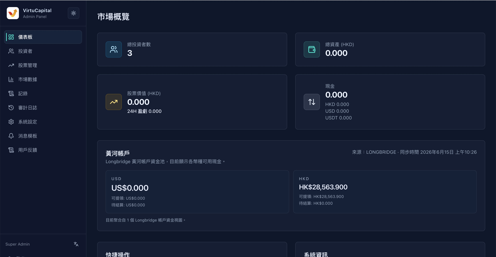
2. 仪表盘概览
仪表盘是管理员登录后的默认首页，提供平台核心数据的 实时监控。
2.1 市场概览卡片
| 指标 | 说明 |
|---|---|
| 总投资者数 | 平台注册投资者的总人数 |
| 总资产（HKD） | 所有投资者资产的总和（按当前汇率折算为港币） |
| 股票价值（HKD） | 所有投资者持有股票的市值总和 |
| ├─ W/L 24小时盈亏 | 最近24小时内股票市值的盈亏变化 |
| 现金 | 各币种的现金余额汇总 |
| ├─ HKD | 港币现金余额 |
| ├─ USD | 美元现金余额 |
| └─ USDT | USDT 余额 |
2.2 黄河账户
显示平台自有资金的账户余额：
- 美元余额
- 港元余额
2.3 快捷操作
提供三个常用功能的快速入口：
- 管理投资者 → 跳转至投资者列表页
- 管理股票分配 → 跳转至股票管理页
- 查看市场 → 跳转至市场数据页
2.4 系统信息
| 项目 | 说明 |
|---|---|
| 应用程序 | 系统名称（Virtu Capital） |
| 版本 | 当前系统版本号 |
| 环境 | 运行环境（生产环境/测试环境） |
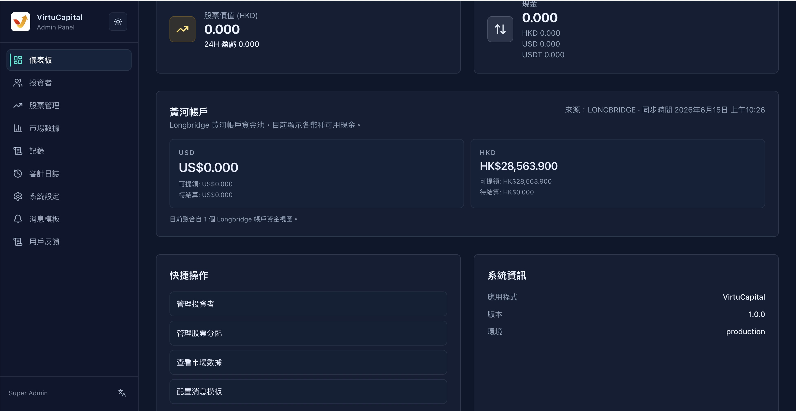
3. 投资者管理
3.1 投资者列表
操作路径：侧边栏 → 投资者管理 → 投资者列表
页面展示所有投资者的详细信息列表。
3.1.1 搜索与筛选
| 筛选条件 | 说明 |
|---|---|
| 姓名/邮箱/电话 | 支持模糊搜索 |
| 状态 | 全部 / 启用 / 停用 |
| 交易权限 | 全部 / 启用 / 停用 |
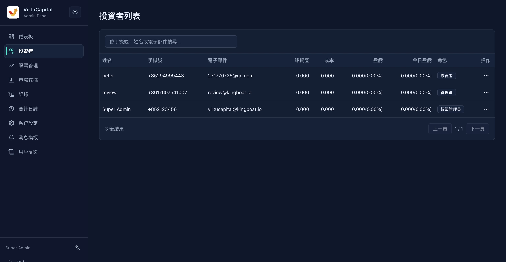
3.1.2 列表字段
| 字段 | 说明 |
|---|---|
| 序号 | 列表中行号 |
| 姓名 | 投资者姓名，点击姓名可查看详情/编辑信息 |
| 邮箱 | 投资者注册时绑定的邮箱 |
| 电话 | 投资者的香港手机号 |
| 状态 | 用户状态标签。绿色=启用，红色=停用 |
| 交易权限 | 交易功能是否开启。绿色=启用，红色=停用 |
| 操作 | 停用/启用按钮，切换投资者状态 |
3.1.3 操作按钮
| 按钮 | 说明 |
|---|---|
| 停用/启用 | 点击后弹出二次确认框，确认后该用户不可登录/可恢复登录 |
3.2 投资者详情
3.2.1 基本信息编辑
点击投资者姓名进入详情页，可编辑：
- 姓名（不可留空）
- 电话号码
- 性别
- 出生日期（格式：YYYY-MM-DD）
- 国籍
- 身份证号
- 用户状态：启用/停用
- 交易权限：启用/停用
3.2.2 用户头像
头像为系统自动生成的 首字母+随机背景色 风格，不可手动修改。
3.2.3 交易限制设置
| 字段 | 说明 |
|---|---|
| 每日交易限额 | 投资者一天内可交易的最大金额（HKD） |
| 单笔交易限额 | 投资者单笔交易的最大金额（HKD） |
| 每日交易次数 | 投资者一天内可交易的最大次数 |
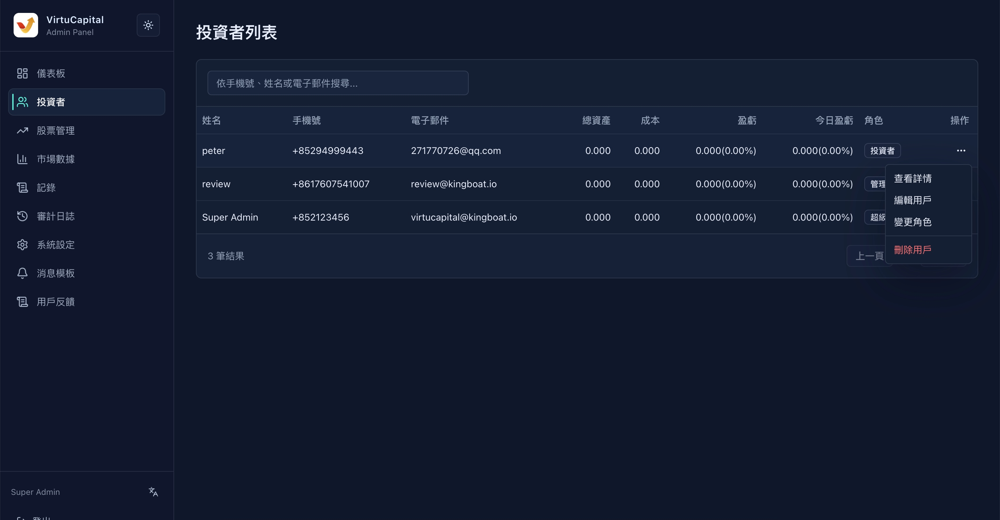
3.2.4 更改密码
- 在投资者详情页点击「更改密码」按钮
- 在弹出的对话框中输入新密码
- 确认新密码
- 点击「确定」完成密码重置
3.2.5 投资者资产概览
展示该投资者的资产摘要：
| 资产项 | 说明 |
|---|---|
| 现金 | 各币种余额（HKD / USD / USDT） |
| 冻结资金 | 因未结算的交易而冻结的资金金额 |
| 股票市值 | 所持有股票的当前总市值（HKD） |
| 总资产 | 现金 + 股票市值的总和（HKD） |
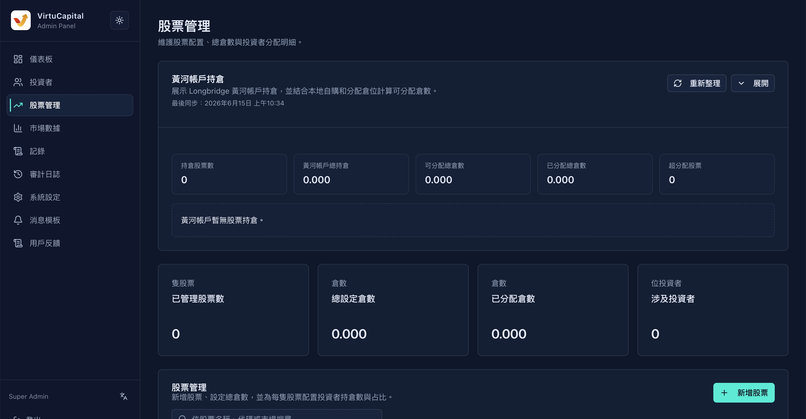
3.2.6 投资者持仓
展示该投资者持有的所有股票清单：
| 字段 | 说明 |
|---|---|
| 股票代码 | 如 AAPL |
| 股票名称 | 如 Apple Inc. |
| 持有数量 | 该投资者持有该股票的总股数 |
| 市值(HKD) | 当前持仓的港币市值 |
3.2.7 交易记录
展示该投资者的历史交易明细：
| 字段 | 说明 |
|---|---|
| 类型 | 交易类型（买入/卖出/分红） |
| 标的 | 交易的股票代码（如有） |
| 方向 | 交易方向（买入/卖出） |
| 数量 | 交易股数 |
| 金额 | 交易金额（对应币种） |
| 状态 | 交易状态（成功/待确认/失败） |
| 时间 | 交易创建时间 |
3.3 创建投资者
操作路径：侧边栏 → 投资者管理 → 创建投资者
或 投资者列表页 → 点击「添加投资者」按钮
| 字段 | 说明 |
|---|---|
| 姓名 | 投资者的真实姓名（不可留空） |
| 邮箱 | 投资者的邮箱地址（不可留空） |
| 密码 | 登录密码（不可留空） |
| 电话号码 | 香港手机号，格式：+852XXXXXXXX |
| 性别 | 男/女/不透露 |
| 出生日期 | 格式：YYYY-MM-DD |
| 国籍 | 下拉选择国家 |
| 身份证号 | 投资者的身份证件号码 |
| 用户状态 | 创建后的初始状态，默认为启用 |
| 交易权限 | 创建后的初始交易权限，默认为启用 |
3.4 批量导入
操作路径：侧边栏 → 投资者管理 → 批量导入
通过 CSV 文件批量导入投资者信息。
3.4.1 下载模板
点击「下载模板」按钮，获取标准 CSV 模板文件，包含以下列：
- 姓名
- 邮箱
- 密码
- 电话号码
- 性别
- 出生日期
- 国籍
- 身份证号
- 用户状态
- 交易权限
3.4.2 导入 CSV
- 准备 CSV 文件（需包含表头和数据行）
- 点击「上传文件」按钮选择文件
- 点击「导入」按钮提交数据
- 导入完成后显示导入结果（成功/失败数量及详情）
3.5 投资者操作记录
操作路径：侧边栏 → 投资者管理 → 投资者操作记录
记录每个投资者在管理员端的详细操作日志。
| 字段 | 说明 |
|---|---|
| 时间 | 操作时间 |
| 投资者名称 | 操作者的名称 |
| 动作 | 具体操作内容（如：修改密码、更新个人信息等） |
| IP 地址 | 操作时的 IP 地址 |
4. 股票管理
4.1 股票列表
操作路径：侧边栏 → 股票管理 → 股票列表
管理平台支持交易的所有股票。
4.1.1 搜索与筛选
| 筛选条件 | 说明 |
|---|---|
| 股票代码 | 输入代码进行精确搜索 |
| 股票板块 | 按市场板块分类筛选 |
4.1.2 列表字段
| 字段 | 说明 |
|---|---|
| 股票代码 | 股票的唯一交易代码 |
| 股票名称 | 股票的公司名称 |
| 当前价格 | 当前最新股价 |
| 所属板块 | 股票所属市场板块 |
| 交易状态 | 显示为标签：交易中/停牌 |
| 操作 | 编辑 / 删除 |
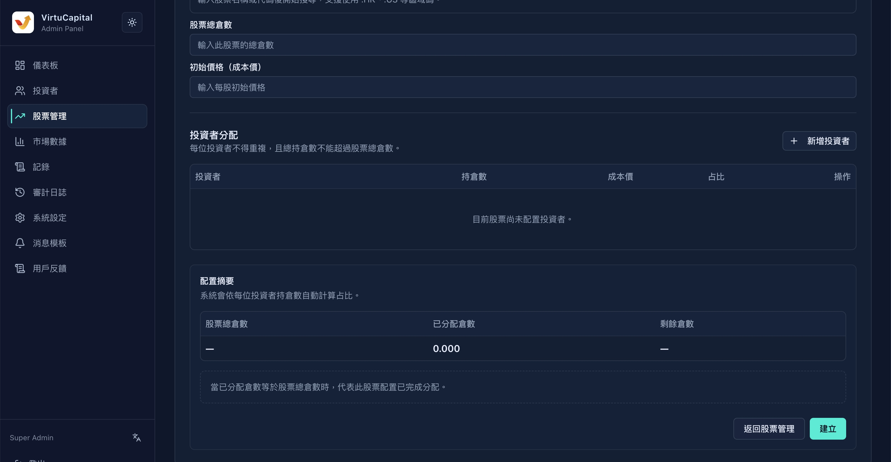
4.2 创建股票
操作路径：股票列表页 → 点击「添加股票」按钮
| 字段 | 说明 |
|---|---|
| 股票代码 | 股票的唯一交易代码（不可留空，创建后不可修改） |
| 股票名称 | 股票的公司名称（不可留空） |
| 所属板块 | 选择股票所属的板块分类 |
| 当前价格 | 股票当前的价格（不可留空） |
| 交易状态 | 交易中/停牌 |
| 描述 | 股票或公司的补充说明 |
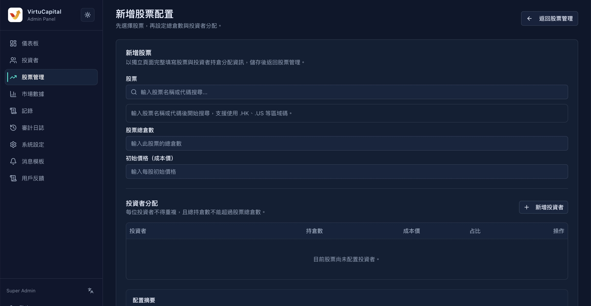
4.3 编辑股票信息
在股票列表页点击 编辑 按钮，修改股票信息。
4.4 分配股票
操作路径：侧边栏 → 股票管理 → 分配股票
为投资者分配特定股票和数量。
4.4.1 分配流程
- 选择要分配股票的 投资者
- 选择要分配的 股票
- 填写分配的 数量
- 选择 分配日期（默认为当前日期）
- 点击「提交」确认分配
4.5 股票交易
4.5.1 发起交易
操作路径：侧边栏 → 股票管理 → 股票交易
为投资者手动发起买入或卖出交易。
| 字段 | 说明 |
|---|---|
| 投资者 | 选择要交易的投资者 |
| 交易类型 | 买入 / 卖出 |
| 股票 | 选择要交易的股票 |
| 交易价格 | 输入交易价格（使用当前市场价格或自定义价格） |
| 数量 | 输入交易股数（买入时需确保投资者有足够现金，卖出时需确保投资者持有足够股票） |
| 交易时间 | 选择交易时间（默认为当前时间） |
4.5.2 批量交易
操作路径：侧边栏 → 股票管理 → 批量交易
支持同时为多个投资者执行同一只股票的交易：
| 字段 | 说明 |
|---|---|
| 股票 | 选择要交易的股票 |
| 交易类型 | 买入 / 卖出 |
| 交易价格 | 交易价格 |
| 交易时间 | 交易执行时间 |
| 投资者列表 | 选择多个投资者并输入每个投资者的交易数量 |
4.6 股票持仓
操作路径：侧边栏 → 股票管理 → 股票持仓
查看所有投资者的股票持仓汇总。
| 字段 | 说明 |
|---|---|
| 投资者 | 持仓的投资者名称 |
| 股票代码 | 持有的股票代码 |
| 股票名称 | 持有的股票名称 |
| 持有数量 | 当前持有该股票的总数 |
| 成本价 | 购入该股票时的平均成本价 |
| 当前价格 | 该股票的当前市场价 |
| 市值 HKD | 该持仓的当前总市值（港币） |
| 盈亏 HKD | 当前持仓的浮动盈亏（港币） |
| 盈亏率 % | 当前持仓的浮动盈亏率 |
4.7 股票板块管理
操作路径：侧边栏 → 股票管理 → 板块管理
4.7.1 板块列表
| 字段 | 说明 |
|---|---|
| 板块名称 | 如：科技股、金融股、医疗股等 |
| 创建时间 | 板块创建时间 |
4.7.2 创建板块
- 在板块管理页面点击「添加板块」按钮
- 输入板块名称
- 点击确认创建
5. 市场数据管理
5.1 汇率快照
操作路径：侧边栏 → 市场数据管理 → 汇率快照
管理不同时间点的汇率快照，用于资产计算和历史数据追溯。
5.1.1 汇率快照列表
| 字段 | 说明 |
|---|---|
| 日期 | 快照记录的日期 |
| USD/HKD 买入 | 美元兑港币的买入汇率 |
| USD/HKD 卖出 | 美元兑港币的卖出汇率 |
| USDT/USD 买入 | USDT 兑美元的买入汇率 |
| USDT/USD 卖出 | USDT 兑美元的卖出汇率 |
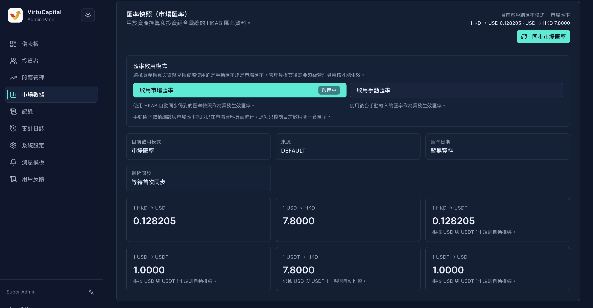
5.1.2 创建汇率快照
操作路径：汇率快照页面 → 点击「创建快照」按钮
| 字段 | 说明 |
|---|---|
| 日期 | 快照记录日期（默认为当前日期） |
| USD/HKD 买入 | 买入 1 美元需要多少港币 |
| USD/HKD 卖出 | 卖出 1 美元需要多少港币 |
| USDT/USD 买入 | 买入 1 USDT 需要多少美元 |
| USDT/USD 卖出 | 卖出 1 USDT 需要多少美元 |
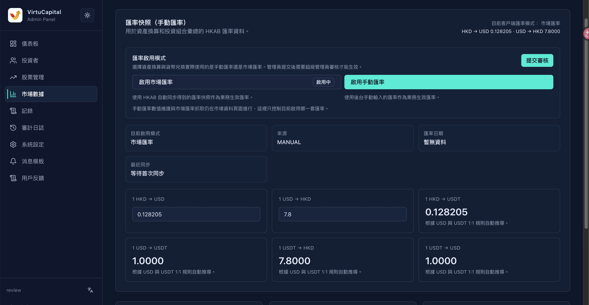
5.1.3 编辑汇率快照
在汇率快照列表页，点击 编辑 图标修改汇率信息。
5.2 股市数据
操作路径：侧边栏 → 市场数据管理 → 股市数据
管理股票的历史市场数据。
5.2.1 股市数据列表
| 字段 | 说明 |
|---|---|
| 股票代码 | 股票的交易代码 |
| 日期 | 数据的日期 |
| 开盘价 | 当日开盘价格 |
| 收盘价 | 当日收盘价格 |
| 最高价 | 当日最高价格 |
| 最低价 | 当日最低价格 |
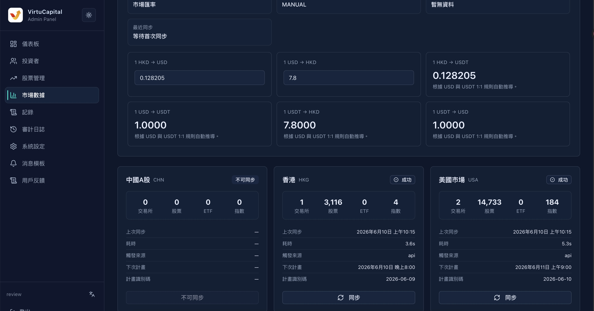
5.2.2 添加股市数据
操作路径：股市数据页面 → 点击「添加数据」按钮
| 字段 | 说明 |
|---|---|
| 股票 | 选择股票（下拉选择） |
| 日期 | 数据日期 |
| 开盘价 | 当日开盘价格 |
| 收盘价 | 当日收盘价格 |
| 最高价 | 当日最高价格 |
| 最低价 | 当日最低价格 |
5.2.3 删除股市数据
在股市数据列表页，点击 删除 图标删除数据。
6. 记录审核
6.1 待审核记录
操作路径：侧边栏 → 记录审核 → 待审核记录
6.1.1 审核列表
| 字段 | 说明 |
|---|---|
| 投资者 | 发起该记录的投资者姓名 |
| 类型 | 记录类型（存款 / 取款 / 转账 / 股票买入 / 股票卖出 / 股票分红） |
| 金额 | 交易金额 |
| 提交时间 | 投资者提交该记录的时间 |
| 当前状态 | 待审核 |
| 操作 | 审核通过 / 审核拒绝 |
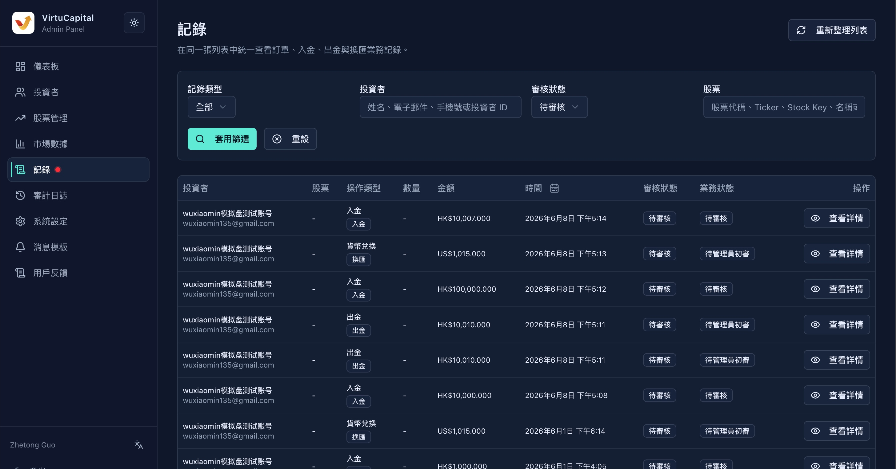
6.1.2 审核流程
- 查看记录详情
- 核实信息的准确性
- 点击「通过」或「拒绝」
- 通过：记录状态变为「已通过」，自动执行（扣款/到账等）
- 拒绝：记录状态变为「已拒绝」，并填写拒绝原因
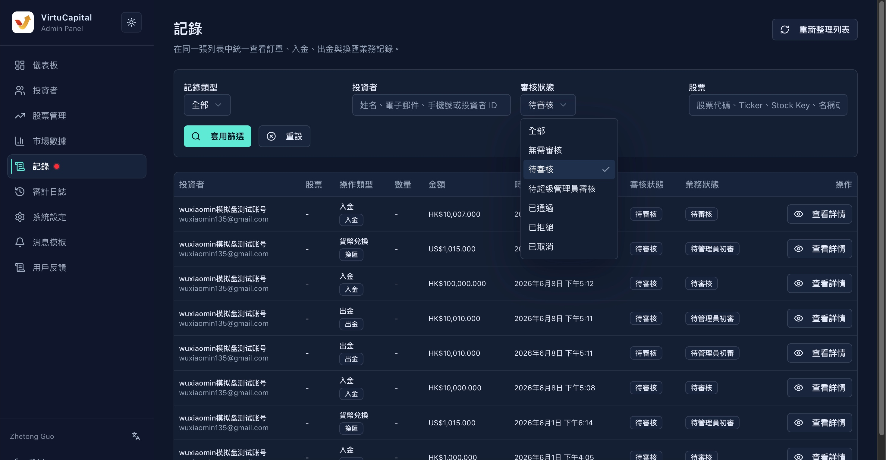
6.1.3 拒绝原因填写
审核拒绝时需要填写拒绝原因：
6.1.4 审核记录详情
点击 详情 查看该记录的完整信息：
| 字段 | 说明 |
|---|---|
| 编号 | 系统自动生成的唯一记录编号 |
| 投资者 | 关联的投资者 |
| 币种 | 交易币种 |
| 类型 | 记录类型 |
| 金额 | 交易金额 |
| 提交时间 | 投资者提交的时间 |
| 附件 | 投资者上传的凭证/文件 |
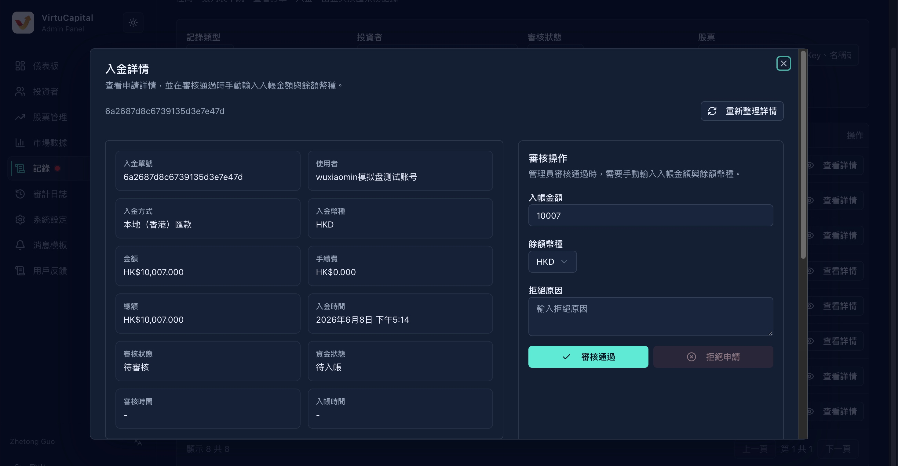
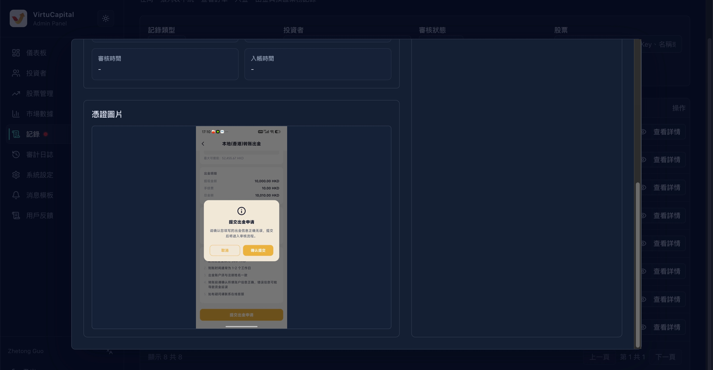
6.2 审核历史
操作路径：侧边栏 → 记录审核 → 审核历史
查看所有审核操作的完整历史记录。
| 字段 | 说明 |
|---|---|
| 编号 | 记录的唯一编号 |
| 投资者 | 记录的发起者 |
| 类型 | 记录类型 |
| 金额 | 交易金额 |
| 提交时间 | 提交时间 |
| 审核者 | 审核该记录的管理员名称 |
| 状态 | 当前状态（已通过 / 已拒绝） |
| 审核时间 | 审核完成的时间 |
| 审核备注 | 审核时的备注或拒绝原因 |
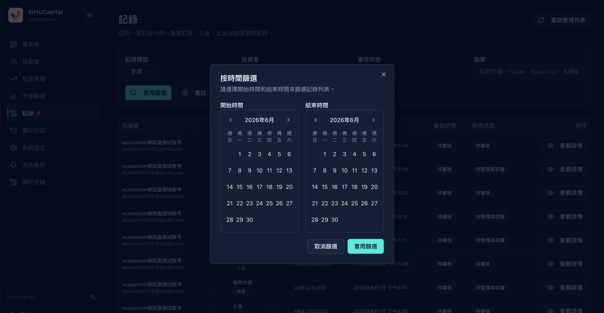
6.3 我的审核
操作路径：侧边栏 → 记录审核 → 我的审核
仅查看当前登录管理员的审核记录。
7. 审计日志
操作路径：侧边栏 → 审计日志 → 审计日志
审计日志是系统自动记录所有管理员操作的详细日志，包括操作时间、操作者、操作内容及 IP 地址。
| 字段 | 说明 |
|---|---|
| 时间 | 操作发生的具体时间 |
| 管理员 | 执行操作的管理员名称 |
| 动作 | 具体操作内容 |
| IP 地址 | 操作时的 IP 地址 |
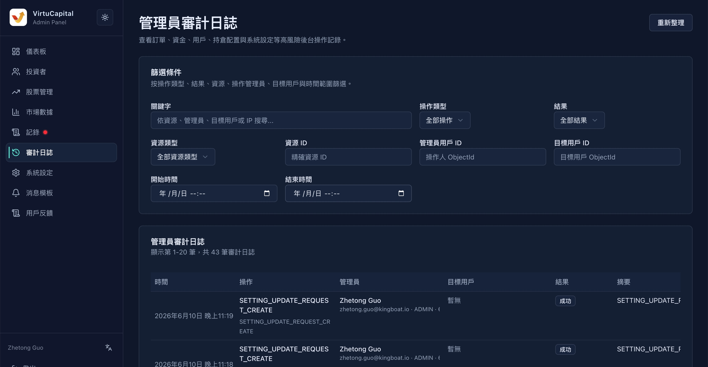
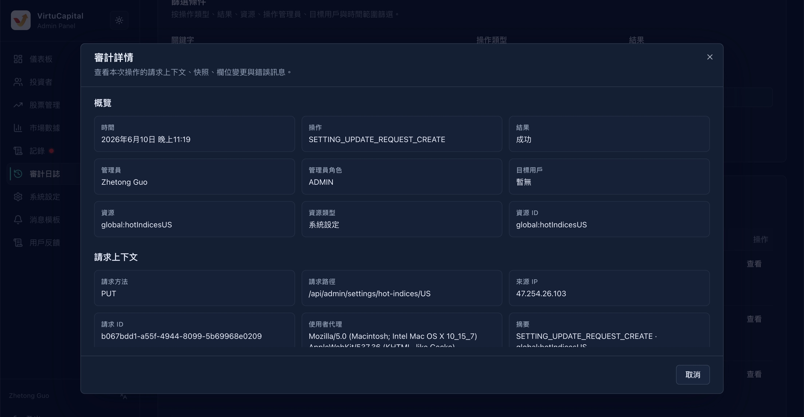
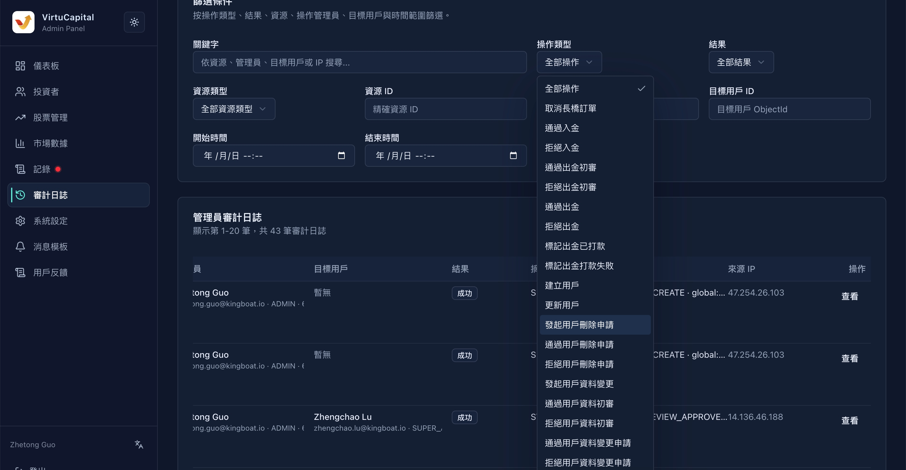
8. 系统设定
8.1 基本配置
操作路径：侧边栏 → 系统管理 → 系统设定
| 配置项 | 说明 |
|---|---|
| 平台名称 | 平台显示名称 |
| 平台 Logo | 上传平台 Logo 图片 |
| 联系邮箱 | 显示在客户端页面的联系邮箱 |
| 联系电话 | 显示在客户端页面的联系电话 |
| 维护模式 | 开启后仅管理员可登录，投资者无法访问系统 |
| 注册开放 | 是否允许新用户注册 |

8.2 安全策略
| 策略 | 说明 |
|---|---|
| 密码最小长度 | 设置密码的最小字符数 |
| 密码复杂度 | 是否需要包含大小写字母、数字、特殊字符 |
| 登录失败锁定次数 | 连续登录失败几次后锁定账号 |
| 登录失败锁定时间 | 锁定持续的时间（分钟） |
| 会话超时时间 | 用户无操作后自动登出的时间（分钟） |
| 2FA 强制开启 | 是否所有管理员必须开启双因素认证 |

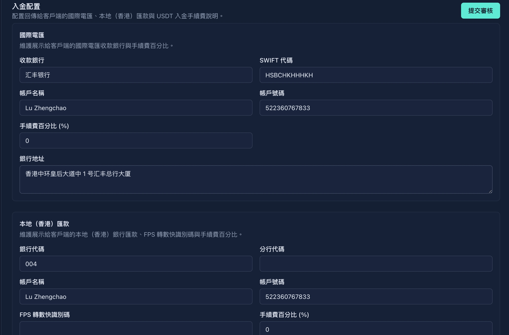

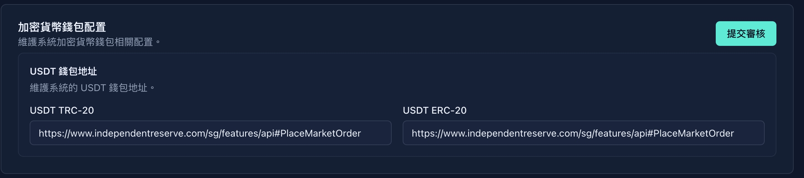
9. 消息模板管理
操作路径：侧边栏 → 系统管理 → 消息模板
管理系统的邮件和通知模板，支持自定义模板内容。
9.1 模板列表
| 字段 | 说明 |
|---|---|
| 模板名称 | 模板的唯一标识名称（如：welcome_email, reset_password） |
| 主题 | 模板的主题（如：欢迎注册、密码重置） |
| 类型 | 模板类型（电子邮件 / 短信 / 系统通知） |
| 状态 | 启用 / 停用 |
| 最后更新 | 模板最后修改时间 |
| 操作 | 编辑 / 预览 / 删除 |
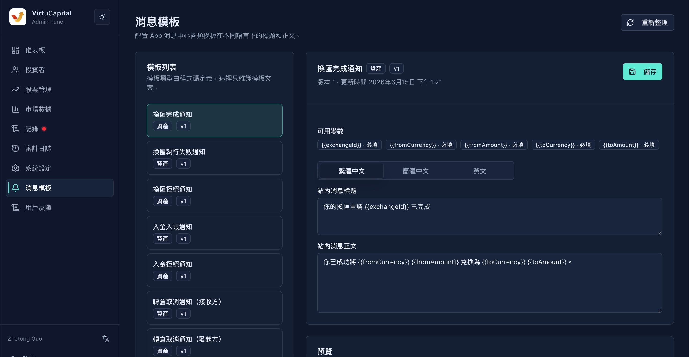

9.2 编辑模板
支持 变量占位符，系统在发送时会自动替换为实际内容：
| 占位符 | 说明 |
|---|---|
| {{user_name}} | 用户姓名 |
| {{platform_name}} | 平台名称 |
| {{verify_code}} | 验证码 |
| {{reset_link}} | 密码重置链接 |
| {{date}} | 当前日期 |
| {{amount}} | 交易金额 |
9.3 创建模板
在模板列表页点击「添加模板」按钮。
| 字段 | 说明 |
|---|---|
| 模板名称 | 模板的唯一标识名称 |
| 模板类型 | 电子邮件 / 短信 / 系统通知 |
| 主题 | 邮件主题或通知标题 |
| 模板内容 | 模板的正文内容 |
10. 用户反馈处理
操作路径：侧边栏 → 系统管理 → 用户反馈
管理用户提交的反馈意见，支持回复和状态跟踪。
10.1 反馈列表
| 字段 | 说明 |
|---|---|
| 提交者 | 提交反馈的用户 |
| 类型 | 反馈类型（功能建议 / 问题报告 / 其他） |
| 内容 | 反馈内容摘要 |
| 状态 | 待处理 / 处理中 / 已处理 |
| 提交时间 | 反馈提交时间 |
| 操作 | 处理 / 删除 |
10.2 处理反馈
- 点击「处理」进入反馈详情
- 查看反馈的完整内容和相关信息
- 填写处理结果或回复内容
- 将状态更新为「已处理」或保持「处理中」
- 提交后用户可在客户端查看回复
11. 常见问题 FAQ
11.1 账户与权限
11.2 投资者管理
11.3 交易与审核
11.4 系统维护
附录 A：权限对照表
客户端角色权限表
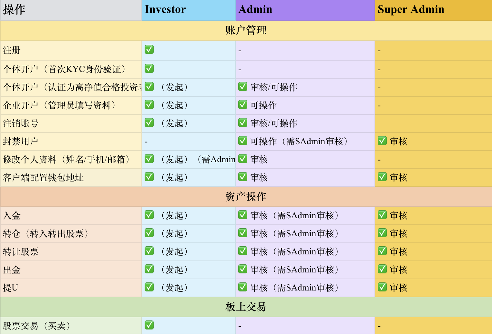
管理员端角色权限表
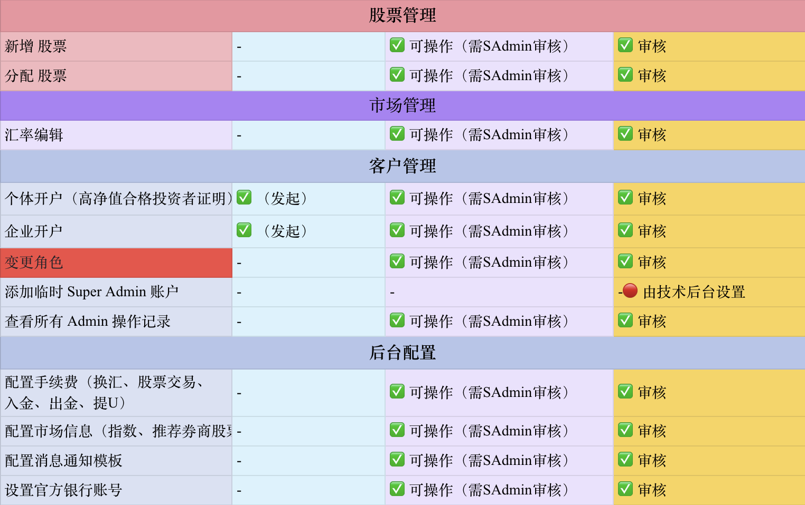
| 功能模块 | 管理员 | 超级管理员 |
|---|---|---|
| 仪表盘查看 | ✅ | ✅ |
| 投资者列表查看 | ✅ | ✅ |
| 创建投资者 | ✅ | ✅ |
| 编辑投资者信息 | ✅ | ✅ |
| 批量导入投资者 | ✅ | ✅ |
| 停用/启用投资者 | ✅ | ✅ |
| 查看投资者详情 | ✅ | ✅ |
| 重置投资者密码 | ✅ | ✅ |
| 设置交易限制 | ✅ | ✅ |
| 查看股票列表 | ✅ | ✅ |
| 创建/编辑股票 | ✅ | ✅ |
| 删除股票 | ✅ | ✅ |
| 分配股票给投资者 | ✅ | ✅ |
| 发起股票交易 | ✅ | ✅ |
| 批量交易 | ✅ | ✅ |
| 管理股票板块 | ✅ | ✅ |
| 创建/编辑汇率快照 | ✅ | ✅ |
| 管理股市数据 | ✅ | ✅ |
| 审核记录 | ✅ | ✅ |
| 查看审计日志 | ✅ | ✅ |
| 查看系统设定 | ✅ | ✅ |
| 修改系统设定 | ❌ | ✅ |
| 维护模式开关 | ❌ | ✅ |
| 管理消息模板 | ✅ | ✅ |
| 处理用户反馈 | ✅ | ✅ |
| 提升/降级管理员 | ❌ | ✅（需后端支持） |
| 删除投资者 | ❌ | ❌（需联系后端） |
附录 B：联系支持
技术支持团队
| 联系方式 | 信息 |
|---|---|
| 支持邮箱 | support@virtucapital.com |
| 技术支持热线 | +852 1234 5678 |
| 工单系统 | https://support.virtu-capital.com |
| 工作时间 | 周一至周五 09:00 - 18:00（香港时间） |
| 紧急联系 | 值班运维：+852 8765 4321（24/7） |
报告问题的建议信息
报告问题时，请准备以下信息以便快速解决：
- 问题描述和期望结果
- 问题重现步骤
- 系统版本和环境信息
- 相关截图或日志
- 操作发生的时间和时区
— 文档结束 —